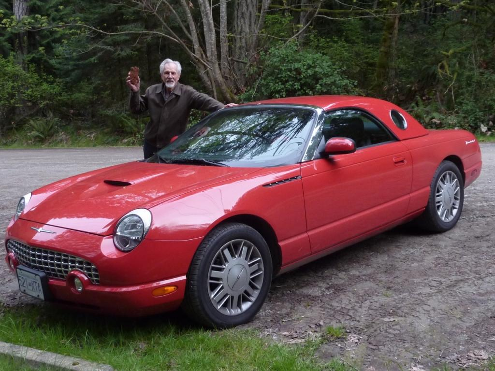
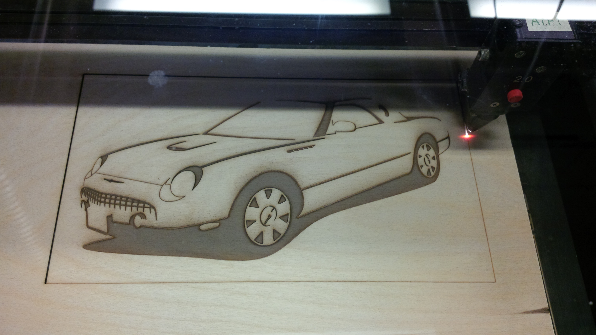
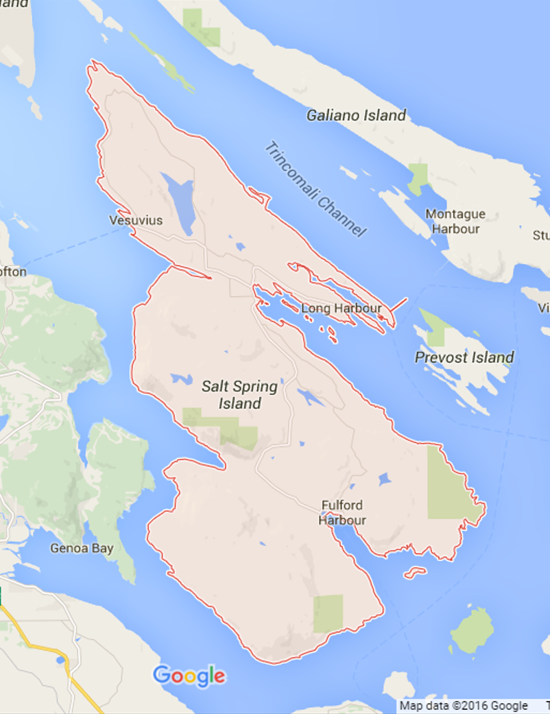
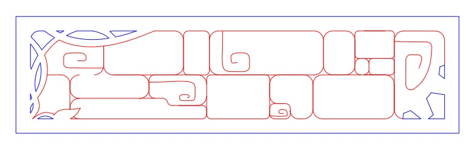
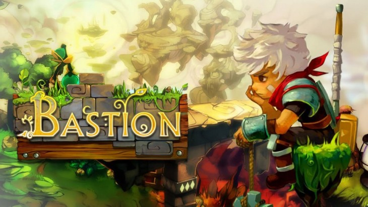
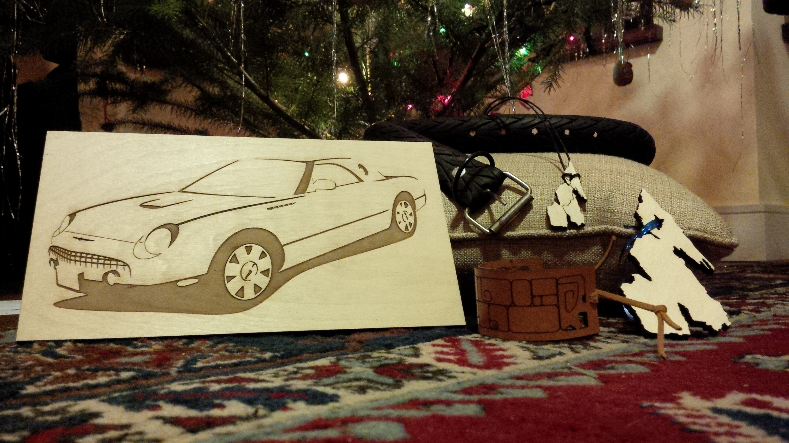

In 2013 I made personalized Christmas presents for my family.
-
Laser-cut Ford Thunderbird plaque
I made the image of the thunderbird in AutoCAD, based on the picture below of my Opa with our fancy red tbird. Deciding which parts to keep, and how to stylize the shadow underneath for a minimalistic (but very recognizable!) image was a lot of fun. The picture on the right shows the laser cutter with all the rastering complete, completing the last pass to cut the image out of the plywood.

Opa and car 
Laser engraving car -
Salt Spring Island necklace and ornament
This one was based off the profile of Salt Spring Island.

-
Bastion-themed cuff bracelet
Made from a leather belt, I tried to incorporate the feel of the computer game Bastion – note the vines on the left and the hint of a gear on the right.


Image from thekoalition.com -
Bike tire belt
After washing an old bike tire several times, I fastened one end around a belt buckle, with a gasket ring as a loop for the tail end, and I drilled out holes to adjust the belt’s tightness.

Making these projects was a lot of fun, and my family really liked the results too!